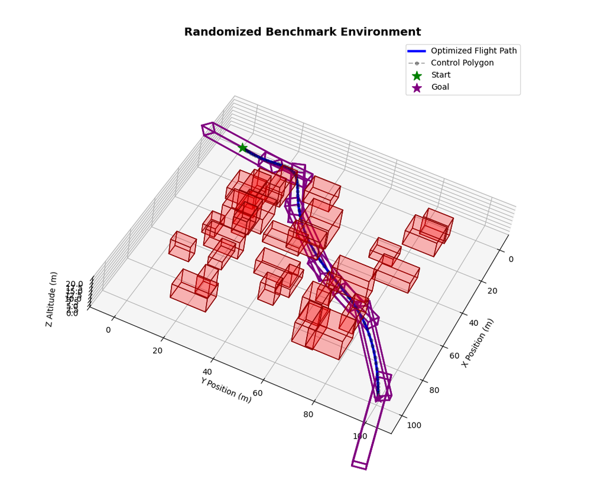
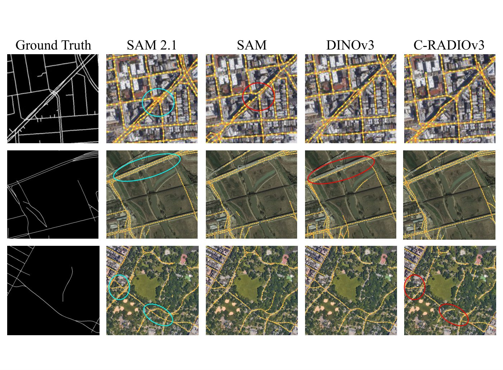
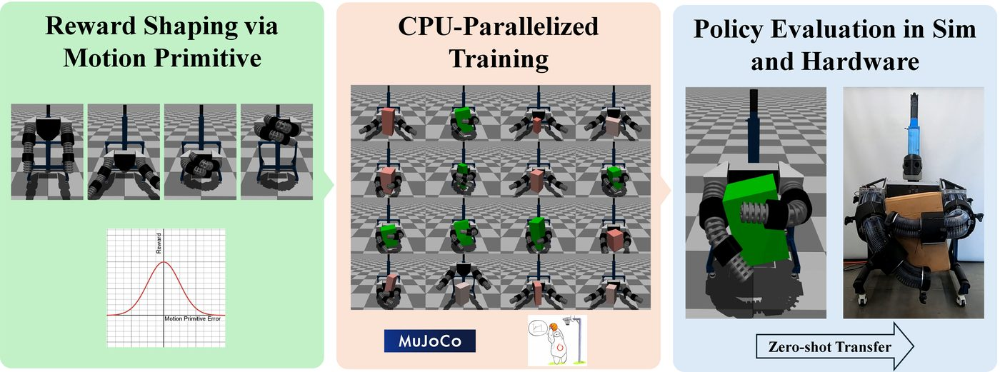

Undergraduate Researcher · BYU
Alejandro Pelaez
Computer Engineering — Autonomous Aerial & Ground Systems
I'm a Computer Engineering student at Brigham Young University with minors in Mathematics and Computer Science, graduating in April 2027. I work on real-time trajectory planning for UAVs in the MAGICC Lab with Dr. Randy Beard, vision foundation models for satellite road-network extraction in the FROST Lab with Dr. Brady Moon, and learning-based control for soft robots in the RaD Lab with Dr. Marc Killpack.
My research sits where learning-based methods meet the perception, planning, and control of autonomous aerial and ground vehicles. I'm applying to PhD programs in robotics, aerospace, and controls to continue that work (what I want to work on).
Grad School Focus: Autonomous Aerial & Ground Vehicles
In grad school I want to make aerial and ground vehicles autonomous in the field: rugged enough for hard terrain and environments, and adaptable enough for situations they weren't designed for. Both kinds of vehicle need the same thing: classical planning and control for guarantees and predictable behavior, combined with learning-based methods that adapt to what a model can't anticipate. My undergraduate work spans both sides: an optimization-based UAV planner with formal safety guarantees, learned perception from foundation models, and reinforcement learning measured against classical controllers.
Aerial vehicles
Planning and target tracking for VTOL aircraft
VTOL aircraft take off like a multirotor and cruise like a fixed-wing, combining hover with long range, yet fast trajectory planners have mostly ignored them. Building on COAST, which shares one architecture across both aircraft types, I want a planner that switches with the VTOL's flight mode, then use it to follow a moving target seen by a camera, including predicting where the target went when an obstacle hides it.
Where it applies: package delivery from a moving truck, disaster response, firefighting, search and rescue.
Ground vehicles
Rugged, adaptive ground robots for field robotics
I want ground vehicles that keep working on unstructured terrain and in changing environments, and adjust to scenarios they've never seen. Classical planners and controllers give them a reliable, verifiable foundation; learned models can cover terrain and dynamics too complex to model by hand. I want to study how to combine the two so a vehicle gains adaptability without losing its guarantees.
Where it applies: search and rescue, off-road and exploration missions, disaster sites, agriculture.
The two also work together: an aircraft can map roads and terrain from above for a ground robot to plan through, which is what my road-topology research is motivated by.
Selected Research
See all research →
COAST: Safe Flight Corridor Planner for Snap-Minimized Trajectories

What Transfers to Road Topology? Foundation Models for Road Extraction

Whole-Body Manipulation with a Soft Robotic Torso via Guided RL
Research Interests
Experience
-
Feb 2026 – PresentAutonomous Aerial Systems Research Assistant · BYU MAGICC Lab, Dr. Randy Beard
-
Sep 2026 – PresentRobotics & Control Research Assistant · BYU RaD Lab, Dr. Marc Killpack
-
Aug 2025 – PresentComputer Vision & Neural Networks Research Assistant · BYU FROST Lab, Dr. Brady Moon
-
Jun – Aug 2025Software Engineer Intern · BNY, Pittsburgh, PA
-
Feb 2024 – Jun 2025Microfluidics & Materials Science Research Assistant · BYU, Dr. Greg Nordin & Dr. Troy Munro
-
Jan – May 2024Electromagnetism & Optics Lab Assistant · BYU Physics & Astronomy
-
May 2022 – Feb 2024Licensed Commercial Electrician · W Systems Electrical Contracting
Education
B.S. Computer Engineering (Expected April 2027)
Brigham Young University, Provo, UT
- Minors in Mathematics and Computer Science
- Graduate coursework: Autonomous Aircraft, High-Performance Computing
- Senior coursework: Control Systems, Robotics & Autonomy, Applied Machine Learning
Honors & Leadership
- 2nd place nationally, SHPE 2026 National Convention undergraduate research poster competition (BYU ECE news ↗)
- 3rd place nationally, IBM/Qualcomm-sponsored national STEM competition (200+ competitors)
- Hispanic Scholarship Fund Scholar
- BYU academic scholarship (2022 – present)
- SHPE BYU chapter: Secretary, Vice-President, President (2023 – present); led $60k+ in fundraising
Skills
Languages: Python, C/C++, MATLAB
ML & Robotics: PyTorch, OpenCV, ROS 2, PyBullet, Isaac Sim, OSQP
Embedded: Arduino, ESP32, Raspberry Pi
Design: KiCad, Fusion 360, OpenSCAD
Systems: Docker, Apptainer, Git, Linux